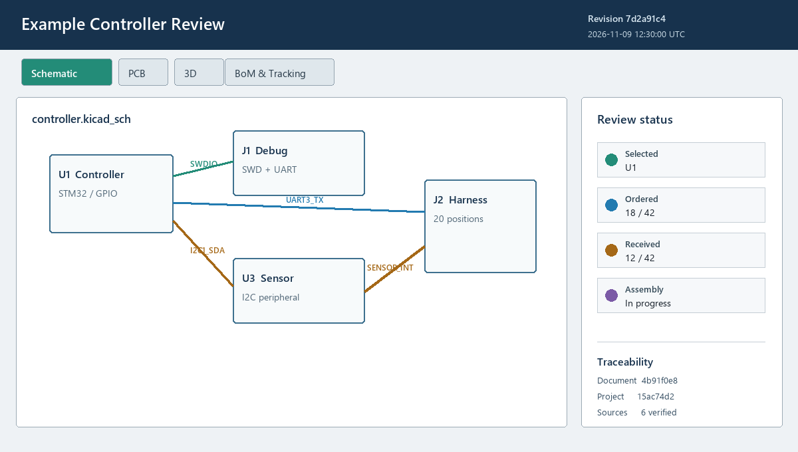

Create one offline interactive HTML review and assembly-tracking document from selected saved project content. The plugin reads saved files and never modifies the KiCad project.

Save the PCB first. Enable schematic, PCB, BoM tracking and 3D independently, then select exact schematic sheets and supported model files. The PCB source remains complete because subsetting saved board objects would create a misleading derivative design.
| Finding | Resolution |
|---|---|
| Missing model | Fix its saved path or exclude 3D. The viewer shows a labelled proxy. |
| STEP/IGES | Provide an authorized WRL/GLB/GLTF alternative. Portable STEP decoding is not included. |
| Missing viewer distribution | Reinstall the PCM package. Developers may set WAYRICAD_KICAD_WEBVIEW_DIST. |
| Over 64 MiB | Exclude optional model assets or reduce the selection. |
Click Build Exact Web Preview. The embedded browser renders the same self-contained document bytes written by export, including navigation, BoM tracking, hashes and notices. Changing any selection invalidates that preview. After export, open the file directly and check every selected tab before distribution.
Selecting a BoM row focuses its component; viewer selections highlight BoM rows. Individual edits save immediately. Group edits require Apply group and confirmation. Ordering, receiving, assembly, DNP and notes remain distinct. Browser state never rewrites the HTML; use progress JSON to transfer or recover it.
wayricad-portable-export BOARD.kicad_pcb OUTPUT.html [OPTIONS] wayricad tools run portable-web-export -- BOARD.kicad_pcb OUTPUT.html [OPTIONS] --sheet GLOB repeatable schematic-sheet filter --model GLOB repeatable supported-model filter --no-schematic omit schematic data --no-pcb omit PCB data --no-bom omit BoM/tracking data --no-3d omit model data --manifest PATH also write traceability JSON
Success returns 0 and prints the complete manifest as JSON. Invalid filters, source/output aliases and I/O failures return 2. The CLI has no embedded human-review gate: inspect its HTML candidate before release. Full examples are in the packaged README and repository CLI guide.
The page header and About dialog show the UTC generation timestamp plus project, revision and document IDs. A machine-readable metadata block records exporter/viewer versions and SHA-256/byte count for every bundled source. Keep the HTML and optional manifest with the reviewed source revision.
The document embeds KiCad WebView under MPL-2.0 plus its source/provenance and dependency notices. It makes no network requests, but it contains selected design and model bytes; share it only with authorized recipients.
Limits: Unsaved editor changes are excluded. This is saved-data review and tracking, not an editable KiCad project, ERC/DRC result, purchasing system, or manufacturing approval.